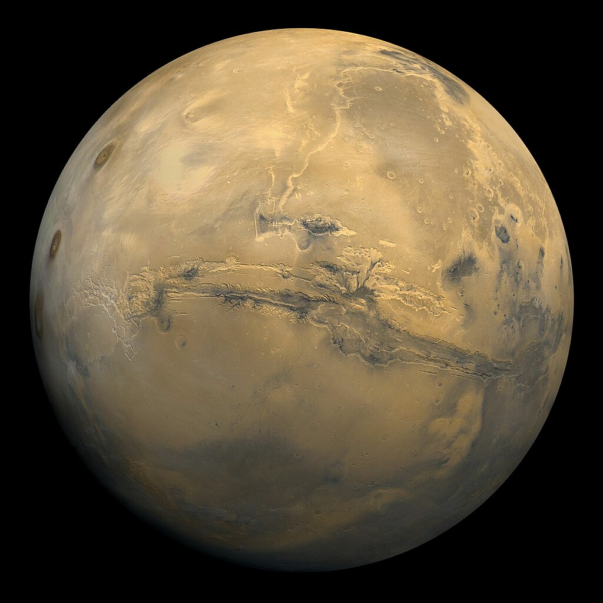
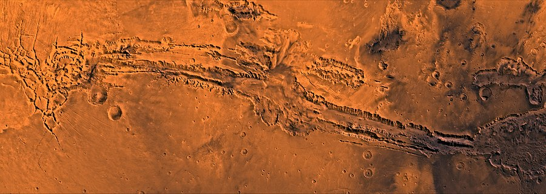
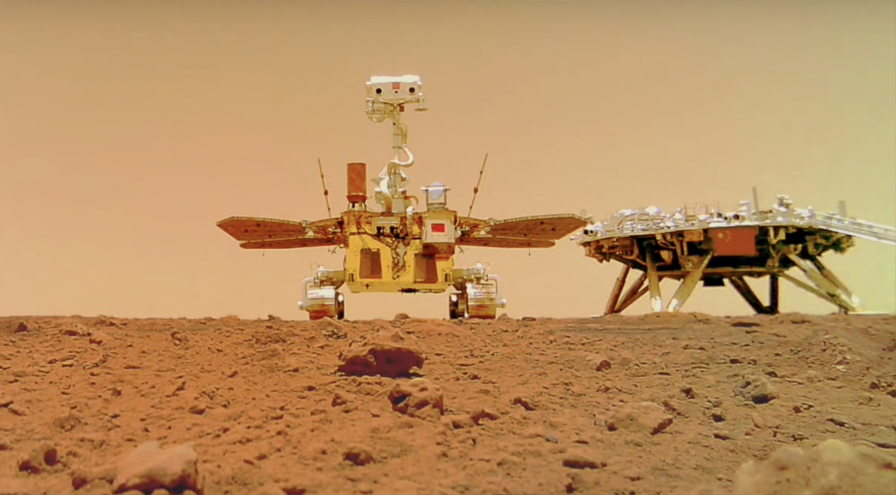
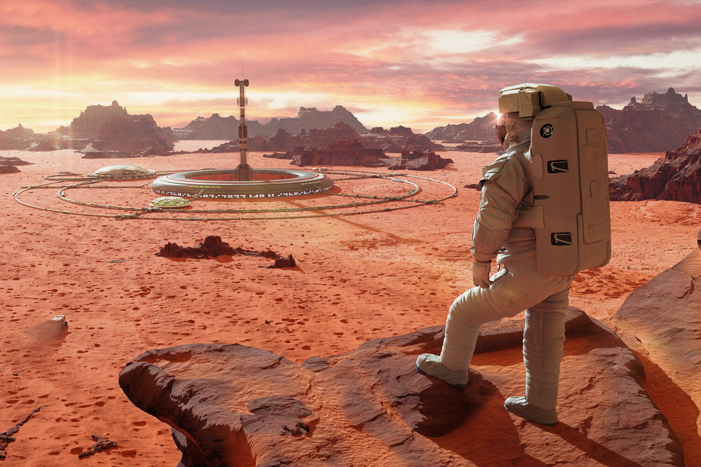

Mars
Mars is the fourth planet from the Sun and the seventh largest in the Solar System; the planet's mass is 10.7% of Earth's. It is named after Mars, the Roman god of war, corresponding to the Greek Ares. Mars is also known as the red planet because of the reddish tint of its surface, given by the mineral maghemite - γ-iron(III) oxide.
Mars is a terrestrial planet with a thin atmosphere (the surface pressure is 160 times lower than Earth's). The surface features of Mars include impact craters similar to the Moon's, as well as volcanoes, valleys, deserts, and polar ice caps similar to Earth's.
Mars has two natural satellites, Phobos and Deimos (translated from Greek as "fear" and "panic", names of Ares' two sons who accompanied him in battle), which are relatively small (Phobos - 26.8×22.4×18.4 km, Deimos - 15×12.2×10.4 km) and have an irregular shape.
Astronomical Characteristics
The minimum distance from Mars to Earth is 55.76 million km (when Earth is exactly between the Sun and Mars), the maximum is 401 million km (when the Sun is exactly between Earth and Mars). The average distance from Mars to the Sun is 228 million km (1.52 AU), and the period of revolution around the Sun is 687 Earth days. Mars' orbit has a noticeable eccentricity (0.0934), so the distance to the Sun varies from 206.6 to 249.2 million km. The inclination of Mars' orbit to the ecliptic plane is 1.85°. In linear size, Mars is almost half the size of Earth. Its average equatorial radius is estimated at 3396.9 ± 0.4 km, or 3396.2 ± 0.1 km (53.2% of Earth's).
The planet's rotation period is close to Earth's - 24 hours 37 minutes 22.7 seconds (relative to the stars), the length of an average Martian solar day is 24 hours 39 minutes 35.24409 seconds, which is only 2.7% longer than an Earth day. For convenience, a Martian day is called a "sol." A Martian year is equal to 668.59 sols, which is 686.98 Earth days.
The gravity near the surface of Mars is 39.4% of Earth's (2.5 times weaker). Since it is unknown whether this gravity is sufficient to avoid long-term health problems, options for creating artificial gravity for long-term human stays on Mars are being considered, such as heavy suits or centrifuges providing Earth-like load on the skeleton.
Exploration of Mars
For systematic study of Mars, the capabilities of the Hubble Space Telescope were used, obtaining the highest resolution photos of Mars ever taken from Earth.
Exploration of Mars by spacecraft is a key part of our understanding of this planet. Starting with the early "Mariner" missions in the 1960s, Mars exploration has become one of the main directions of space research activities. Soviet missions, such as the "Mars" and "Phobos" programs, made significant contributions to the study of the planet, including the first soft landings on its surface. American missions, from "Viking" to the modern "Perseverance" and "Ingenuity," are also crucial for expanding our knowledge of Mars. Orbital missions, such as "Mars Odyssey," "Mars Express," and "MAVEN," continue to collect data on the climate, atmosphere, and surface of Mars. Surface missions, such as "Curiosity" and "Zhurong," conduct in-situ research, investigating the planet's geology and chemistry. All these efforts together create a comprehensive picture of Mars exploration, which continues to evolve with each new spacecraft and mission.

Colonization of Mars
The proximity of Mars and its relative similarity to Earth have led to numerous fantastic projects for terraforming and colonizing Mars by humans in the future.
The "Curiosity" rover discovered two sources of organic molecules on the surface of Mars. Besides the short-term increase in methane in the atmosphere, the device detected the presence of carbon compounds in a powdered sample left after drilling a Martian rock. The first discovery was made by the SAM instrument on board the rover. Over 20 months, it measured the composition of the Martian atmosphere 12 times. In two instances - at the end of 2013 and the beginning of 2014 - "Curiosity" detected a tenfold increase in the average methane content. This spike, according to the rover's scientific team, indicates the presence of a local source of methane. Whether it is of biological or other origin, experts cannot say due to the lack of data for a full analysis.